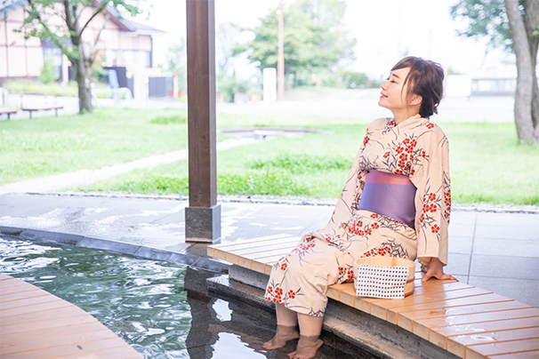
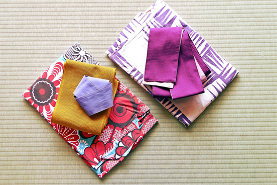
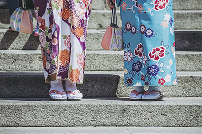
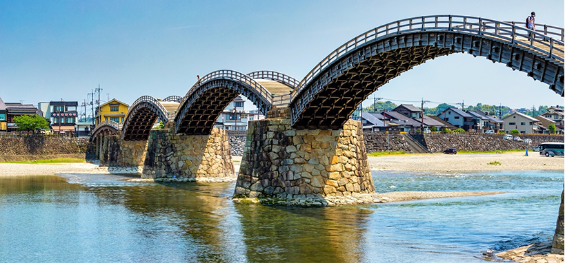

お好きな浴衣で宮島散策
宮島には有名な厳島神社を中心として紅葉谷公園、弥山、大聖院、宮島水族館、ロープウェイなど見どころがいっぱいです。 ぜひ散策してみてはいかがでしょうか？ 浴衣のレンタルもご用意しておりますので、併せてご利用いただければと存じます。
思い出の写真を
より華やかに



浴衣は全部で50種類から
お選び頂けます。
着付けをご希望の方は
スタッフにお声がけ下さい。
観光スポット
- 厳島神社
- 日本三景の１つでもあり、海上に浮かんでいるように建つ厳島神社は印象的です。島全体が神の島として崇められており、陸地では畏（おそ）れ多いということで海中に社が建てられています。日本で唯一、潮の満ち引きのある場所に建つ寝殿造りの社殿群と大鳥居から成る嚴島神社。御本社を中心とする左右の廻廊でつながる客神社、天神社、能舞台などが、背景に広がる自然と調和したまるで絵を見るような美しさ。その華やかで神秘的な建築美は訪れる人々を魅了しています。
- 大聖院
- 大聖院は宮島で最古の歴史を持つ寺院であり、厳島神社の別当寺として祭祀を司り、社僧を統括してきた寺院です。
- 錦帯橋
- 日本三名橋の一つに数えられている木造橋。精巧かつ独創的で強靭な五連アーチで構成されています。春の桜や秋の紅葉など、四季折々の自然と調和した美しい風景が楽しめます。
- 宮島ロープウェー
- 弥山山麓の紅葉谷駅から獅子岩駅までをつなぐロープウェイ。山頂付近にある展望台からは、世界遺産であり「日本三景」の宮島の景色が望め、夕暮れ時はまさに絶景です。また、もみじ饅頭の手焼き体験や、恋人の聖地「誓いの火」といった見どころも充実しています。
- 宮島水族館
- 宮島水族館のシンボルになっているスナメリやフンボルトペンギンなど、350種1万3000点以上の水生生物が集まっています。1日3～4回開演されるアシカライブが大人気です。
- 紅葉谷公園
- 紅葉谷公園には約700本の紅葉があります。春から夏にかけては緑が清々しく、11月中旬から下旬にかけては紅葉が綺麗です。
{kind=link}
{kind=link}
- 
錦帯橋
{kind=link}
{kind=link}
{kind=link}
自然豊かな宮島では、観光名所が多数ございます。 ここには載せきれない名所も多数ございますので、是非訪れてみて下さいね。 目一杯観光を楽しまれた後は、当旅館で疲れた身体をゆっくりと癒して頂けるよう おもてなしをさせて頂きます。